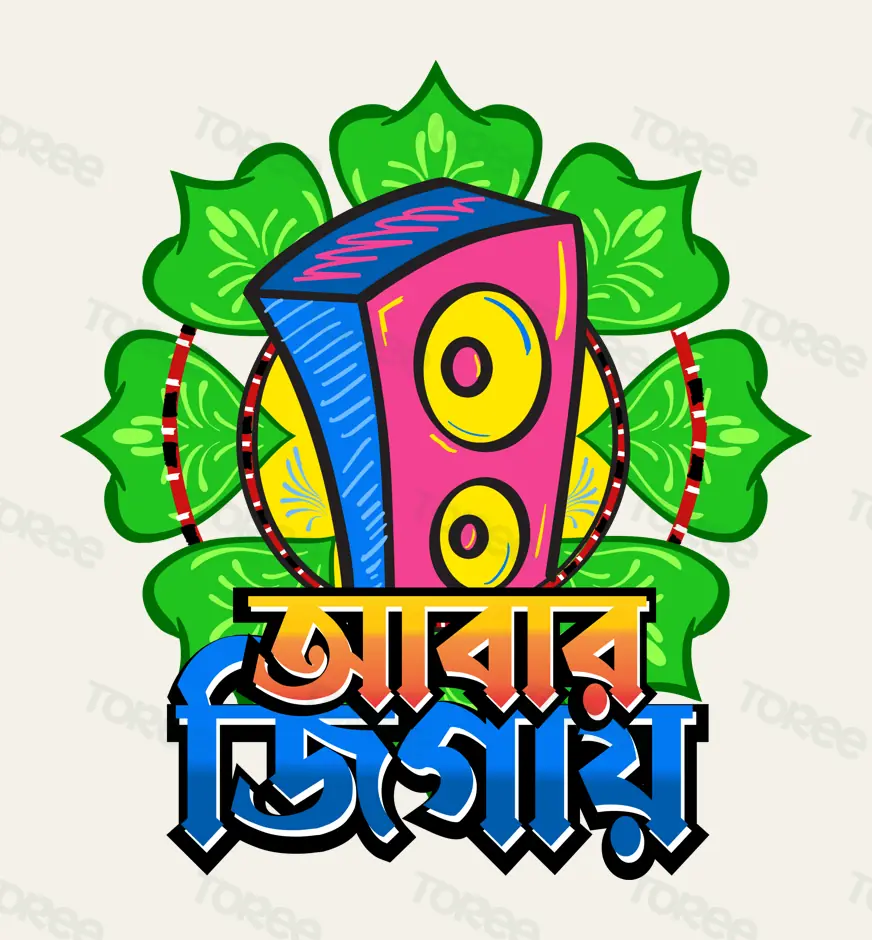

Chapter IA Gallery on Wheels
Stand on any street in Dhaka and listen. Before you see them, you hear them: hundreds of bicycle bells, ringing all at once, all day long. Then they arrive, the rickshaws of Dhaka, and you understand why no other city in the world looks like this one.
Rickshaws are said to have reached Dhaka around 1938. Other cities had them too, and most of those cities let them stay plain: a seat, a hood, a way to get from here to there. Dhaka did something else. It painted them.
Every rickshaw here is a canvas. On the panels behind the seat and the plates beneath the hood, painters in the workshops of Old Dhaka have spent generations filling every inch with colour: peacocks and tigers, village rivers and city skylines, film heroes and heroines, flowers that never existed anywhere but on a rickshaw. The hoods are trimmed and tasselled, the frames shine, and no two are ever quite the same. The paint is loud on purpose. In a city this crowded, joy has to be bright enough to be seen.
In 2023, UNESCO added the rickshaws and rickshaw painting of Dhaka to its list of the Intangible Cultural Heritage of Humanity. Dhaka was not surprised. It had known for ninety years.
Chapter IIA City That Knows How to Celebrate
To understand Dhaka, go to Puran Dhaka, the old city, where the lanes are narrow, the biryani is legendary and nobody is ever really in a hurry.
The people of the old city, the Dhakaiya, are famous across Bangladesh for three things: their food, their wit and their love of a good time. A Dhakaiya conversation is a performance. A Dhakaiya insult is usually a compliment. And a Dhakaiya celebration is impossible to ignore.
Come in January for Shakrain, when the rooftops of the old city fill with kites, the sky fills with colour and the evening fills with fireworks and music. Come for a wedding, for Eid, for Pohela Boishakh, for any excuse at all. Somewhere a speaker will be turned up far louder than it needs to be, and somebody’s uncle will already be dancing.
The Dhakaiya do not wait for a reason to celebrate. Being together is the reason.

Chapter IIIAbar Jigay
আবার জিগায়. Say it aa-baar ji-gaay, with the weight on the last word and a grin you can’t quite hide. You may also see it spelled Abar Zigay.
Word for word, it means "and you ask again?" In Dhaka it means much more. It is the answer to every invitation that never needed asking. Coming to the wedding? Abar jigay. Another cup of tea? Abar jigay. Want to go up to the roof and fly kites? Abar jigay.
It is a yes so certain that the question itself becomes the joke. It is the sound of someone who has already put on their shoes.
And underneath it is everything the Dhakaiya are. There is the easy, unbothered confidence of a city that has seen it all and decided to enjoy it anyway: traffic, rain, noise, none of it worth a frown. And there is the warmth. You only say abar jigay to a friend. It means: of course I’m with you. You never even had to ask.

Chapter IVOn the Canvas
We drew this bag the way a Dhaka rickshaw painter would.
At the centre is a speaker, painted hot pink and electric blue, its yellow woofers wide open. It leans a little to one side, the way someone leans on a doorframe at a party they have no intention of leaving. That is the festival: Shakrain rooftops, wedding nights, music turned up for the whole neighbourhood.
Behind it a yellow sun glows, ringed by a beaded border of red, black and white like the trim on a rickshaw hood. Around that, green leaves open in every direction, the bold, impossible flowers that bloom only on rickshaw panels.
And across the front, the words. আবার glows orange and gold. জিগায় comes in big, bold and blue. Both are carved out in heavy black outlines with a white shadow behind them, lettered in the confident style of the rickshaw workshops, where the painters have long done the signboards and film banners too.
There is no story here to mourn and nothing to explain. Every element on this bag says the same thing, loudly, in a Dhakaiya accent: life is short, the music is on, and you are invited.
Chapter VWhy We Carry It
For almost a century, the rickshaws of Dhaka have carried the city’s people, painted like a festival on every street. This bag turns that around. Now you carry a little of the rickshaw.
It belongs to a side of Bangladesh the world rarely hears about: not its struggles, but its joy. Bangladesh is a country that paints its rickshaws, flies its kites from every roof and answers almost every invitation with a laugh and a yes.
So, would you carry a piece of Dhaka with you?
Abar jigay.
A story of Bangladesh. Yours to carry.